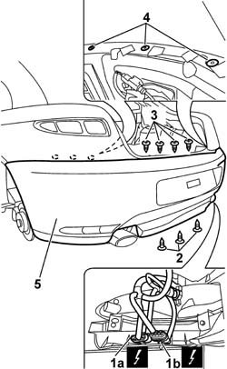
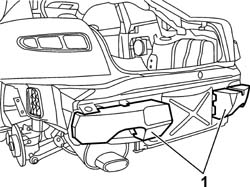

7210E66 REAR BUMPER
- Path
- Procedures > 72 PANELS AND FRAME > 7210 REMOVING REFITTING > 7210E EXTERNAL PARTS > 7210E66 REAR BUMPER
- Kind
- repair procedure (removal / refitting; the operation number is the code)
- Applies to
- all engines; all production periods
- Interactive page
- https://sloeber94.github.io/elrnDB-aGt/en/#/125002032
Applies to: all engines; all production periods
 Removing
Removing
 Refitting
RefittingOp. 4450B06 LEFT REAR WHEEL R R
Op. 4450B08 RIGHT REAR WHEEL R R
Op. 7055B44 LEFT HAND REAR SUPPLEMENTARY WHEEL ARCH - R+R
Op. 7055B45 RIGHT HAND REAR SUPPLEMENTARY WHEEL ARCH - R+R
Op. 7040B10 LOAD PLATFORM (LUGGAGE PLATFORM) TRIM - R+R
Op. 7040B22 LUGGAGE COMPARTMENT/LOAD PLATFORM MOULDING - R+R
Op. 7050A22 REAR SEAT CUSHION - R+R
Op. 7050A14 SPLIT REAR SEAT ASSEMBLY - R+R
Op. 7040G30 BOOT LIGHT BULB HOLDER - R R
(right side)
Op. 5570T85 CD/AUDIO PLAYER LOADER - R R
(left side)
Op. 7065C86 BOOT/LOAD PLATFORM POWER UNIT HOUSING - R R
(left side)
Op. 7040B35 One luggage compartment COMPARTMENT left or right RR
Op. 7040B06 SIDE TRIM (ONE) LH OR RH, LOAD COMPARTMENT/LOAD PLATFORM - R R
(right and left sides)
1. Disconnect the electrical connection (1a) and the electrical connection (1b).
Name | Connector | |
|---|---|---|
1a | Bumper rear coupling | See D212A BUMPER REAR COUPLING ( CONNECTORS ) |
Name | Connector | |
|---|---|---|
1b | Bumper rear coupling | See D212B BUMPER REAR COUPLING ( REAR ) |
2. Undo the lower bolts fixing the bumper.
Lower the ramp.
3. Undo the upper central bumper bolts.
4. Working on both sides of the car, undo the side bolts inside the luggage compartment fixing the bumper.
5. Remove the bumper.

Applies to: all engines; all production periods
1. Prise out the buffers if necessary.

Applies to: all engines; all production periods
Refitting
RemovingCheck that the rear bumper is undamaged.
Refit the buffers if they were removed.
Fit the bumper.
Working on both sides of the car, tighten the side bolts in the luggage compartment fixing the bumper.
 | Fastening | Component | Ø | Value (daNm) |
|---|---|---|---|---|
- | Bolt | FRONT BUMPERS | M6 | (Luggage compartment interior 08 |
Tighten the upper middle bolts fixing the bumper.
| Fastening | Component | Ø | Value (daNm) |
|---|---|---|---|---|
- | Bolt | FRONT BUMPERS | M6 | (Upper 08 |
Raise the vehicle on the lift.
Tighten the lower bumper fixing bolts.
| Fastening | Component | Ø | Value (daNm) |
|---|---|---|---|---|
- | Bolt | FRONT BUMPERS | M6 | (Lower 08 |
Connect the electrical connections to the bumper.
Name | Connector | |
|---|---|---|
- | Bumper rear coupling | See D212A BUMPER REAR COUPLING ( CONNECTORS ) |
Name | Connector | |
|---|---|---|
- | Bumper rear coupling | See D212B BUMPER REAR COUPLING ( REAR ) |
Op. 7040B06 SIDE TRIM (ONE) LH OR RH, LOAD COMPARTMENT/LOAD PLATFORM - R R
(right and left sides)
Op. 7040B35 One luggage compartment COMPARTMENT left or right RR
Op. 5570T85 CD/AUDIO PLAYER LOADER - R R
(left side)
Op. 7065C86 BOOT/LOAD PLATFORM POWER UNIT HOUSING - R R
(left side)
Op. 7040G30 BOOT LIGHT BULB HOLDER - R R
(right side)
Op. 7050A14 SPLIT REAR SEAT ASSEMBLY - R+R
Op. 7050A22 REAR SEAT CUSHION - R+R
Op. 7040B22 LUGGAGE COMPARTMENT/LOAD PLATFORM MOULDING - R+R
Op. 7040B10 LOAD PLATFORM (LUGGAGE PLATFORM) TRIM - R+R
Op. 7055B44 LEFT HAND REAR SUPPLEMENTARY WHEEL ARCH - R+R
Op. 7055B45 RIGHT HAND REAR SUPPLEMENTARY WHEEL ARCH - R+R
Topics linked from this page (14)
- 4450B06 LEFT REAR WHEEL R R
- 4450B08 RIGHT REAR WHEEL R R
- 5570T85 CD/AUDIO PLAYER LOADER - R R
- 7040B06 SIDE TRIM (ONE) LH OR RH, LOAD COMPARTMENT/LOAD PLATFORM - R R
- 7040B10 LOAD PLATFORM (LUGGAGE PLATFORM) TRIM - R+R
- 7040B22 LUGGAGE COMPARTMENT/LOAD PLATFORM MOULDING - R+R
- 7040B35 One luggage compartment COMPARTMENT left or right RR
- 7040G30 BOOT LIGHT BULB HOLDER - R R
- 7040H80 PARCEL RACK
- 7050A14 SPLIT REAR SEAT ASSEMBLY - R+R
- 7050A22 REAR SEAT CUSHION - R+R
- 7055B44 LEFT HAND REAR SUPPLEMENTARY WHEEL ARCH - R+R
- 7055B45 RIGHT HAND REAR SUPPLEMENTARY WHEEL ARCH - R+R
- 7065C86 BOOT/LOAD PLATFORM POWER UNIT HOUSING - R R